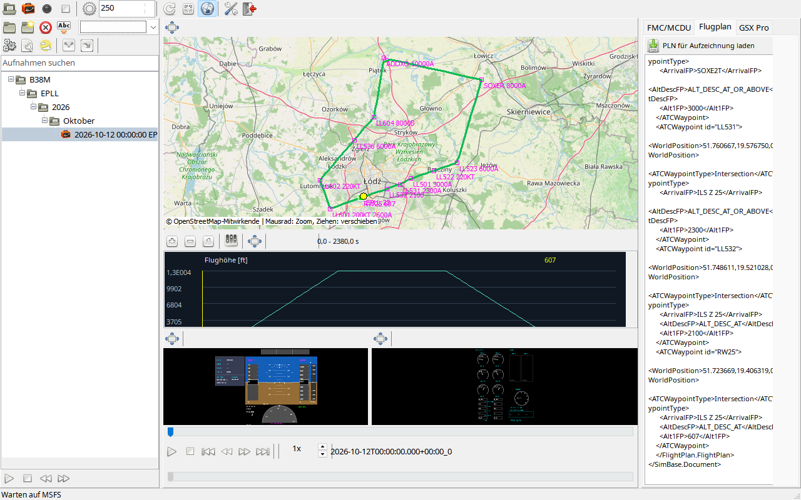

Wählen Sie zunächst Aufnahme oder Analyse. Aufnahme benötigt MSFS 2024; Dateianalyse funktioniert offline. Behalten Sie die Paketstruktur bei, starten Sie MSFS24-FDR.exe und prüfen Sie Sprache und Status. Laden Sie das Flugzeug und verlassen Sie die Vorbereitung mit Ready for flight.
Für Wiedergabe wählen Sie links einen abgeschlossenen Flug und lösen bei Bedarf einzelne Ansichten. Vergleichen Sie denselben Zeitpunkt auf Karte, PFD und Daten. Plan/OFP verwenden die anonymisierte Schleife EPLL.25 ADOX2W SOXE2T LL501 ILSZ.25 EPLL.25; Telemetrie ist synthetisch.
MSFS24-FDR zeichnet Microsoft Flight Simulator 2024 auf und spielt dessen Daten ab. MSFS 2020, FSX und Prepar3D werden nicht unterstützt. Die Instrumente sind Analyseanzeigen, keine Simulatorsteuerung.
| Option / Aktion | Verhalten und Einschränkungen |
|---|---|
| Erste Aufnahme | Vollständiges Win64-Archiv entpacken, EXE starten, Flug in MSFS 2024 laden und Ready for flight wählen. Vor manueller/automatischer Aufnahme die Verbindung abwarten. |
| Wiedergabe | Abgeschlossenen Flug links auswählen. Karte, Diagramme, Instrumente und Datenseiten verwenden dieselbe aufgezeichnete Zeit. |
| Benutzerdaten | Einstellungen, Index, Aufnahmen und Protokolle liegen in %LocalAppData%\MSFS24-FDR. Den gesamten Ordner einschließlich Recordings sichern; Programmdateien getrennt ersetzen. |
| Offline | Gespeicherte Daten/Pläne/Nachrichten/Karten funktionieren ohne MSFS. Neue Kartenkacheln, Wetter, SimBrief und Cloud-KI brauchen die jeweilige Netzwerkverbindung. |
| Hilfe | F1 öffnet das Thema des aktiven Bereichs. Inhaltsbaum und CHM-Suche verwenden; andere Oberflächensprachen greifen auf Englisch zurück. |
